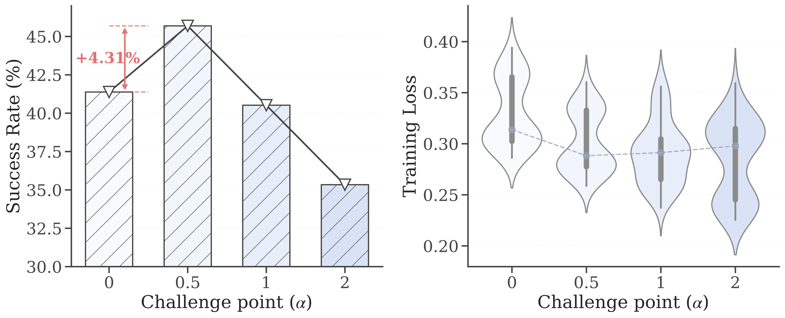

Key Innovation
MobileGen mimics the human learning paradigm of gradual progression by dynamically generating training data that are well aligned with the capability frontier of GUI agents, driving the continual evolution of the agents toward increasingly sophisticated behaviors.
Abstract
Large-scale, high-quality interaction trajectories are essential for advancing mobile Graphical User Interface (GUI) agents. While existing methods typically rely on labor-intensive human demonstrations or automated model exploration to generate GUI trajectories, they lack fine-grained control over task difficulty. This fundamentally restricts learning effectiveness due to the mismatch between the training difficulty and the agent's capabilities. Inspired by how humans acquire skills through progressively challenging tasks, we propose MobileGen, a novel data generation framework that adaptively aligns training difficulty with the GUI agent's capability frontier. Specifically, MobileGen explicitly decouples task difficulty into structural (e.g., trajectory length) and semantic (e.g., task goal) dimensions. It then iteratively evaluates the agent on a curated prior dataset to construct a systematic profile of its capability frontier across these two dimensions. With this profile, the probability distribution of task difficulty is adaptively computed, from which the target difficulty for the next round of training can be sampled. Guided by the sampled difficulty, a multi-agent controllable generator is finally used to synthesize high-quality interaction trajectories along with corresponding task instructions. Extensive experiments show that MobileGen consistently outperforms existing data generation methods by improving the average performance of GUI agents by 1.57 times across multiple challenging benchmarks. This highlights the importance of capability-aligned data generation for effective mobile GUI agent training.
Methodology

Overview of our proposed pipeline MobileGen.
Key Stages of Pipeline
MobileGen continuously pushes the frontier of the agent's capability while maximizing training effectiveness by dynamically setting the challenge point that align data difficulty with the agent's current capability.
- Agent Capability Profiling: The student agent is evaluated on a prior dataset to derive structural and semantic capability profiles.
- Difficulty Distribution Generation: Based on the profiles, the challenge point is set to form the desired difficulty distribution.
- Difficulty-Aware Trajectory Generation: Guided by the sampled difficulty parameters, explorer and supervisor collaborate to generate interaction trajectories. The reasoning traces and instructions will then be reconstructed via inverse synthesis.
Detailed workflow of MCG.
Multi-Agent Controllable Generator (MCG)
MCG generates difficulty-aware training trajectories controlled by sampled difficulty parameters through multi-agent collaboration.
- During Interaction Trajectory Generation, the supervisor allocates exploration step budgets for each application before the exploration begins and dynamically manages the explorer's step usage across applications while performing rollbacks to correct interaction errors.
- Following exploration, the synthesizer reconstructs step-level thoughts and trajectory-level instructions of all primitive trajectories.
Main Results
MobileGen significantly outperforms existing data generation methods, improving the average performance of GUI agents by 1.57 times across multiple challenging benchmarks.
| Model | AndroidWorld | AndroidControl-Curated-Hard | AndroidControl-Curated-Easy | ||||
|---|---|---|---|---|---|---|---|
| SR (%) | Type (%) | Grounding (%) | SR (%) | Type (%) | Grounding (%) | SR (%) | |
| GPT-5 | 46.6 | 66.2 | 14.5 | 16.6 | 79.0 | 16.1 | 29.6 |
| GUI-Owl-7B | 54.3 | 62.2 | 64.5 | 41.6 | 71.0 | 83.9 | 61.8 |
| UI-TARS-1.5-7B | 39.7 | 62.6 | 37.6 | 28.2 | 70.6 | 64.9 | 51.6 |
| Zero-shot | |||||||
| Qwen3-VL-4B-Inst. | 25.0 | 70.8 | 26.4 | 25.6 | 81.4 | 49.1 | 37.8 |
| Qwen3-VL-8B-Inst. | 31.0 | 71.2 | 27.9 | 24.0 | 78.6 | 51.9 | 34.2 |
| InternVL3-14B | 29.3 | 69.4 | 32.7 | 27.6 | 78.0 | 47.5 | 33.6 |
| OS-Genesis | |||||||
| Qwen3-VL-4B-Inst. | 31.9 | 72.8 | 29.7 | 27.8 | 83.6 | 68.4 | 54.4 |
| Qwen3-VL-8B-Inst. | 37.9 | 75.2 | 31.2 | 29.6 | 85.4 | 69.6 | 56.8 |
| InternVL3-14B | 35.3 | 71.6 | 37.9 | 31.2 | 81.8 | 69.9 | 55.0 |
| GUI-Rewalk | |||||||
| Qwen3-VL-4B-Inst. | 33.6 | 71.8 | 28.8 | 29.2 | 82.8 | 67.1 | 53.2 |
| Qwen3-VL-8B-Inst. | 41.4 | 73.0 | 33.3 | 31.6 | 84.2 | 68.7 | 55.8 |
| InternVL3-14B | 31.9 | 73.8 | 36.4 | 32.8 | 80.6 | 66.5 | 53.6 |
| Ours (MobileGen) | |||||||
| Qwen3-VL-4B-Inst. | 40.5 | 77.6 | 37.9 | 35.6 | 86.8 | 70.9 | 58.6 |
| Qwen3-VL-8B-Inst. | 45.7 | 80.8 | 45.5 | 38.4 | 88.6 | 72.2 | 61.2 |
| InternVL3-14B | 42.2 | 78.6 | 46.7 | 36.6 | 86.8 | 68.4 | 58.8 |
Results on AndroidWorld and AndroidControl-Curated. "SR" denotes task success rate, "Type" indicates action-type accuracy, and "Grounding" represents grounding accuracy computed on annotated subsets. Results in bold and underline denote the best and second-best results of each trained backbone, respectively.
| Model | Tool | Information | Shopping | Media | Social | Multi-Apps | Overall | |||||||
|---|---|---|---|---|---|---|---|---|---|---|---|---|---|---|
| HL | LL | HL | LL | HL | LL | HL | LL | HL | LL | HL | LL | HL | LL | |
| GPT-5 | 38.6 | 75.5 | 27.7 | 65.4 | 23.9 | 61.0 | 26.9 | 71.4 | 36.6 | 74.8 | 24.4 | 65.5 | 29.2 | 68.4 |
| GUI-Owl-7B | 71.3 | 73.0 | 58.1 | 62.0 | 52.6 | 68.4 | 59.7 | 67.9 | 66.5 | 71.0 | 54.1 | 64.0 | 59.7 | 66.9 |
| UI-TARS-1.5-7B | 52.7 | 66.0 | 39.8 | 54.7 | 31.6 | 49.1 | 47.5 | 61.6 | 48.8 | 64.8 | 39.2 | 54.1 | 42.7 | 57.7 |
| Zero-shot | ||||||||||||||
| Qwen3-VL-4B-Inst. | 44.5 | 67.8 | 37.1 | 57.8 | 33.3 | 55.7 | 36.3 | 59.3 | 42.9 | 67.1 | 33.4 | 57.6 | 37.5 | 60.5 |
| Qwen3-VL-8B-Inst. | 44.7 | 70.8 | 35.3 | 59.6 | 31.2 | 58.5 | 36.0 | 63.0 | 41.4 | 69.1 | 34.4 | 60.5 | 37.0 | 63.2 |
| InternVL3-14B | 23.3 | 44.4 | 18.6 | 41.4 | 18.1 | 38.2 | 15.1 | 34.6 | 22.5 | 43.6 | 18.3 | 37.8 | 19.4 | 40.1 |
| OS-Genesis | ||||||||||||||
| Qwen3-VL-4B-Inst. | 55.1 | 76.4 | 46.4 | 64.0 | 47.3 | 66.2 | 47.8 | 68.3 | 58.2 | 76.1 | 50.2 | 69.9 | 49.0 | 70.0 |
| Qwen3-VL-8B-Inst. | 60.6 | 78.8 | 51.0 | 67.0 | 49.4 | 69.1 | 52.1 | 74.1 | 61.1 | 79.6 | 56.0 | 74.4 | 53.6 | 73.3 |
| InternVL3-14B | 62.8 | 75.1 | 52.8 | 66.1 | 46.7 | 68.5 | 48.5 | 70.3 | 59.4 | 78.0 | 53.8 | 72.8 | 52.1 | 71.0 |
| GUI-ReWalk | ||||||||||||||
| Qwen3-VL-4B-Inst. | 57.2 | 78.1 | 48.2 | 66.2 | 47.0 | 71.9 | 51.4 | 74.4 | 56.2 | 79.3 | 52.2 | 72.2 | 51.8 | 72.1 |
| Qwen3-VL-8B-Inst. | 63.9 | 80.5 | 53.9 | 69.8 | 51.1 | 71.0 | 56.9 | 78.6 | 63.0 | 82.5 | 58.0 | 76.9 | 56.8 | 75.9 |
| InternVL3-14B | 59.9 | 77.6 | 50.5 | 65.5 | 48.2 | 67.2 | 53.6 | 72.3 | 60.5 | 83.4 | 55.2 | 74.0 | 53.4 | 72.4 |
| Ours (MobileGen) | ||||||||||||||
| Qwen3-VL-4B-Inst. | 58.9 | 77.7 | 49.5 | 66.1 | 49.1 | 70.8 | 52.1 | 76.3 | 60.2 | 81.1 | 54.2 | 74.2 | 54.8 | 75.1 |
| Qwen3-VL-8B-Inst. | 63.5 | 79.9 | 53.5 | 69.1 | 53.1 | 72.7 | 58.0 | 76.9 | 64.2 | 80.3 | 60.0 | 78.9 | 59.8 | 81.3 |
| InternVL3-14B | 61.1 | 78.9 | 52.1 | 67.8 | 50.2 | 70.4 | 52.5 | 74.3 | 62.1 | 82.9 | 57.2 | 76.0 | 56.4 | 75.4 |
Results on GUI-Odyssey. "HL" and "LL" denote high-level and low-level task instructions, respectively. The metric reported is the action match score (AMS). Results in bold and underline denote the best and second-best results of each trained backbone, respectively.
Deep Dive
Ablation study
These results reveal that effective GUI agent learning critically depends on jointly modeling difficulty distribution and trajectory quality control.
Impact of Challenge Point
This observation suggests that GUI agent training follows a frontier-sensitive learning dynamic, where progress is maximized when the difficulty of generated task trajectories stays near the agent’s evolving capability boundary.
Citation
Please cite our work if you find it useful for your research: